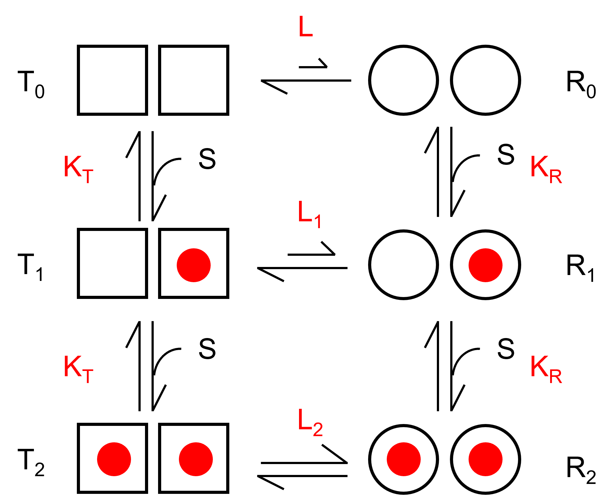

アロステリックモデル再考-07 MWCモデル
平衡状態から
6状態モデル

まずはT状態とR状態を遷移する6状態モデルを考えます．
赤文字がそれぞれの平衡，解離定数を表します．4状態の時と同様に，
\( \Large \frac{T_0}{R_0} = L\)
\( \Large \frac{T_1}{R_1} = L_1 \)
\( \Large \frac{T_2}{R_2} = L_2 \)
\( \Large \frac{T_0}{T_1} = \frac{K_T}{\color{red}{2} S}, \quad \frac{R_0}{R_1} = \frac{K_R}{\color{red}{2} S} \)
\( \Large \frac{T_1}{T_2} = \frac{\color{red}{2} K_T}{S}, \quad \frac{R_1}{R_2} = \frac{\color{red}{2} K_R}{S} \)
となります．分子，分母に２が入っていることに注意です．
基質飽和度
基質飽和度，Yは，
\( \Large Y = \frac{T_1 +\color{red}{2}T_2 + R_1 + \color{red}{2} R_2}{\color{red}{2} (T_0 +T_1 + T_2 + R_0 + R_1 +R_2)} \)
となります．
ここで，
\( \Large R_1 = R_0 \frac{2s}{k_R} \)
\( \Large R_2 = R_1 \frac{s}{2k_R} = R_0 \left( \frac{s}{k_R} \right)^2 \)
\( \Large T_1 = T_0 \frac{2s}{k_T} = R_0 L \frac{2s}{k_R}\)
\( \Large T_2 = T_1 \frac{s}{2k_T} = R_0 L \frac{s}{2k_T} = R_0 L \left( \frac{s}{k_T} \right)^2 \)
となるので，
\( \Large \begin{eqnarray} Y &=& \frac{T_1 +2T_2 + R_1 + 2 R_2}{2 (T_0 +T_1 + T_2 + R_0 + R_1 +R_2)} \\
&=&
\frac{ R_0 L \frac{2s}{k_T} + 2R_0 L \left( \frac{s}{k_T} \right)^2 + R_0 \frac{2s}{k_R} + 2R_0 \left( \frac{s}{k_R} \right)^2 }
{2(R_0 L + R_0 L \frac{2s}{k_T}+R_0 L \left( \frac{s}{k_T} \right)^2+R_0 + R_0 \frac{2s}{k_R} + R_0 \left( \frac{s}{k_R} \right)^2) } \\
&=&
\frac{ L \frac{s}{k_T} + L \left( \frac{s}{k_T} \right)^2 + \frac{s}{k_R} + \left( \frac{s}{k_R} \right)^2 }
{ L + L \frac{2s}{k_T}+ L \left( \frac{s}{k_T} \right)^2+1 + \frac{2s}{k_R} + \left( \frac{s}{k_R} \right)^2 } \\
&=&
\frac{ L \frac{s}{k_T} \left(1 + \frac{s}{k_T} \right) + \frac{s}{k_R} \left(1 + \frac{s}{k_R} \right) }
{ L \left(1 + \frac{s}{k_T} \right)^2 + \left(1 + \frac{s}{k_R} \right)^2 }\\
\end{eqnarray} \)
ここで，
\( \Large \alpha \equiv \frac{S}{K_R} \quad c \equiv \frac{K_R}{K_T}\)
とすると，
\( \Large Y = \frac{ Lc \alpha (1 + c \alpha) + \alpha (1 + \alpha)}{L ( 1 + c \alpha)^2 + ( 1 + \alpha)^2} \)
となります．
となります，結合部位がｎの場合には，
\( \Large Y = \frac{L c \alpha \left( 1 + c \alpha \right)^{n-1} + \alpha \left( 1 + \alpha \right)^{n-1}}{ L \left( 1 + c \alpha \right)^n+ \left( 1 + \alpha \right)^n } \)
となり，以前導出したものと同じ結果を得ることができます．
ここで，上の４状態を考えると，
\( \Large 1 = \frac{T_0}{R_0} \frac{R_0}{R_1} \frac{R_1}{T_1}\frac{T_1}{T_0} = L \cdot \frac{K_R}{2s} \cdot \frac{1}{L_1} \cdot \frac{2s}{K_T} \)
となるので，
\( \Large L \cdot K_R = L_1 \cdot K_T \)
となります．
下の４状態を考えると，
\( \Large 1 = \frac{T_1}{R_1} \frac{R_1}{R_2} \frac{R_2}{T_2}\frac{T_2}{T_1} = L_1 \cdot \frac{2K_R}{s} \cdot \frac{1}{L_2} \cdot \frac{s}{2K_T} \)
となるので，
\( \Large L_1 \cdot K_R = L_2 \cdot K_T \)
となります．
ここで，R状態のほうが基質との結合アフィニティが高いとすると，
\( \Large \frac{K_T}{s} = \frac{T_0}{T_1} > \frac{R_0}{R_1}=\frac{K_R}{s}, \quad \frac{K_T}{s} = \frac{T_1}{T_2} > \frac{R_1}{R_2}=\frac{K_R}{s}\)
\( \Large K_T > K_R \) となり，
\( \Large L > L_1, \quad L_1 > L_2 \) となります．
つまり，\( \Large L > L_1 > L_2 \) となり，T1とR1はR1寄りに，T2とR2はさらにR2寄りににとなるのです．